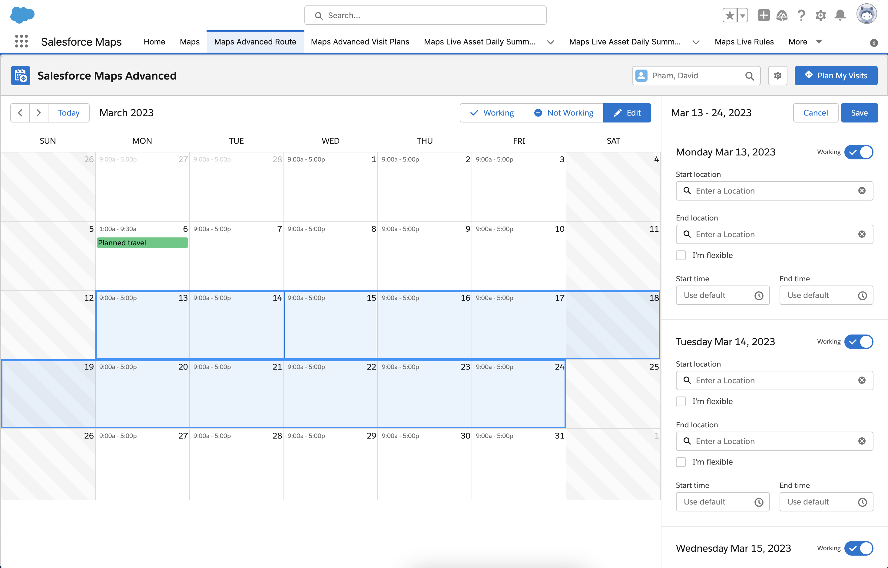

Shipped Projects Gallery
Salesforce Maps Advanced Routes Calendar
Jobs to be done: Help traveling sales reps plan their travel routes and schedule. Takes into account either a central or continuous route for their locations.
Challenge: Utilize clean information architecture to layout appropriate amounts of data at a time without overwhelming users with too many options and controls over the scheduling tool.
Salesforce Maps ESRI integration

Jobs to be done: Allow users to overlay ESRI maps over Salesforce maps to see data in realtime.
Challenge: Be able to keep ESRI design language (images, text, branding, etc) while balancing the design with native Salesforce Maps design language.
Salesforce Maps | Shaper Layer Builder | Paste Postal Codes

Jobs to be done: Allow users to smartly insert large amounts of postal codes by country. Filter out and prevent erroneous postal codes that are not linked to the applied country.
Challenge: Figure out a way to prevent users from making mistakes of inserting zip codes of many countries at a time — given the limitations of development. Use the limited space to account for localization and error-handling text.
Salesforce Maps Mobile Onboarding screens

Goal: Make a delightful onboarding experience to explain to users what they can do with Salesforce Maps
Jobs to be done: Do more with less. Don't overwhelm users with too much information. Encourage playtime with how to use the mobile app and allow flexibility to explore without punishing users for making mistakes.